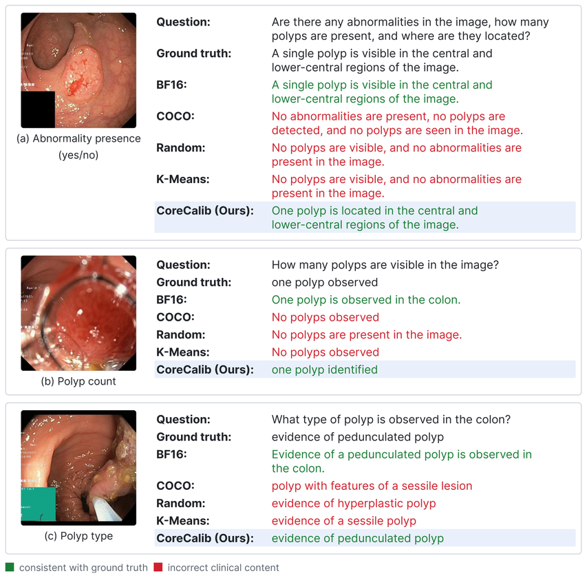

Medical vision-language models (VLMs) show promise for clinical image understanding, but their computational and memory requirements hinder deployment on resource-constrained clinical hardware. Post-training quantization (PTQ) offers a practical compression strategy without retraining, yet its effectiveness depends strongly on the calibration data. We propose CoreCalib, a training-free and quantizer-agnostic framework for constructing compact calibration sets that preserve the target medical VQA distribution. CoreCalib stratifies data by clinical question class, identifies representative visual modes using frozen DINOv2 features with UMAP and HDBSCAN, and expands selected images into class-balanced question-answer pairs.
On Kvasir-VQA-x1, we evaluate CoreCalib with MASQuant, GPTQ, and QIG using a fixed 128-pair budget. CoreCalib achieves the best METEOR with all three quantizers and the best ROUGE-L with MASQuant and GPTQ. With W4A8 MASQuant, it improves METEOR from 0.5672 with COCO calibration to 0.6234, recovering approximately 41% of the degradation relative to BF16. These results support CoreCalib as a data-centric component for resource-efficient medical VLM deployment.
CoreCalib is a training-free and quantizer-agnostic framework that constructs a compact calibration set in three stages. The first stage stratifies the training data by clinical question class.
The second stage embeds images with a frozen DINOv2 encoder, reduces the representation with UMAP, and uses HDBSCAN to retrieve real representative images from high-density regions. The third stage expands these representatives into their available question-answer pairs and fills the fixed calibration budget with a class-balanced round-robin policy.
The resulting calibration set is passed unchanged to an existing post-training quantization algorithm. CoreCalib does not modify the fine-tuned model or the internal objective of the quantizer.
| Quantizer | Calibration | BLEU ↑ | ROUGE-L ↑ | METEOR ↑ |
|---|---|---|---|---|
| Half precision (BF16) | 0.4964 | 0.7005 | 0.7040 | |
| MASQuant (W4A8) | COCO | 0.3313 | 0.5486 | 0.5672 |
| Random | 0.3827 | 0.5991 | 0.6170 | |
| K-Means | 0.3954 | 0.6063 | 0.6170 | |
| CoreCalib (Ours) | 0.3943 | 0.6103 | 0.6234 | |
| GPTQ (W4A16) | COCO | 0.4172 | 0.6373 | 0.6545 |
| Random | 0.4438 | 0.6586 | 0.6625 | |
| K-Means | 0.4380 | 0.6554 | 0.6642 | |
| CoreCalib (Ours) | 0.4473 | 0.6608 | 0.6649 | |
| QIG (W4A8) | COCO | 0.3099 | 0.5310 | 0.5513 |
| Random | 0.3041 | 0.5321 | 0.5565 | |
| K-Means | 0.3048 | 0.5235 | 0.5494 | |
| CoreCalib (Ours) | 0.3054 | 0.5313 | 0.5581 |
Within each quantizer, CoreCalib obtains the best METEOR: 0.6234 with MASQuant, 0.6649 with GPTQ and 0.5581 with QIG. It also has the best ROUGE-L with MASQuant and GPTQ. The half-precision BF16 model scores 0.7040 METEOR.
| Variant | Strat. | Discovery | Rank | BLEU ↑ | ROUGE-L ↑ | METEOR ↑ |
|---|---|---|---|---|---|---|
| Random | ✓ | - | - | 0.3827 | 0.5991 | 0.6170 |
| K-Means | ✓ | K-Means | 1st | 0.3954 | 0.6063 | 0.6170 |
| w/o stratification | × | HDBSCAN | 1st | 0.3905 | 0.6029 | 0.6190 |
| 2nd member | ✓ | HDBSCAN | 2nd | 0.4002 | 0.6014 | 0.6173 |
| CoreCalib | ✓ | HDBSCAN | 1st | 0.3943 | 0.6103 | 0.6234 |
The full CoreCalib configuration has the best ROUGE-L (0.6103) and METEOR (0.6234). Using the second cluster member gives the best BLEU (0.4002), and removing stratification lowers METEOR to 0.6190.
Answers of the W4A8 MASQuant model under different calibration sets are compared for three question types: abnormality presence, polyp count and polyp type. Green marks answers consistent with the ground truth and red marks incorrect clinical content.

@misc{damdensityaware,
author = {Dam, Tien-Dat and Huynh, Huu-Thuan and Tran, Minh-Triet and Le, Trung-Nghia},
title = {Density-Aware Calibration for Resource-Efficient Medical Vision-Language Models},
}